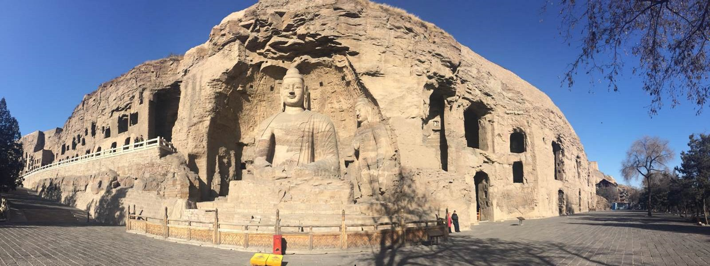

-----------我是跳转按钮----> ^ ^<----我是跳转按钮-----------
大同位于山西省最北端，地形由西北向东南倾斜，属温带大陆性季风气候，四季鲜明，为国家新能源示范城市和中国优秀旅游城市，著名景点有云冈石窟、悬空寺等。
大同处于华北地台的山西台背斜与阴山隆起的交接部位。北为北口隆地，西南为大同──静乐凹陷，东南为桑干河新断陷。该区域在多期的地壳构造变动中形成了一系列的构造形迹，尤其以燕山运动和喜马拉雅山运动的影响最为明显，新构造运动相当发育、地震活动也较为频繁。东部为著名的世界地质奇观大同火山群，与云南腾冲构成南北两大火山群。

大同地处温带大陆性季风气候区，受季风影响，四季鲜明。
春季气温回升很快，平均气温6.5~9.1℃，总是乍暖还寒，多大风，降雨较少，平均降水量仅为56.1mm，占年降水量的14.6%。
夏季气候温和，平均气温在19~21.8℃之间，雨水集中，平均降水量为246.9mm，占全年降水量的64.3%。
秋季来临后气温逐渐下降，平均气温在5.8~8.4℃之间，平均降水量为72.96mm，占全年降水量的19%。
冬季较春夏秋三季漫长，长达四个多月，盛行西北风，日短天寒。平均气温在-12.8~-6.3℃之间，最冷月为1月份，平均气温是-11.3℃。平均降水量为8.06mm，占全年降水量的2.1%。大同市气候干寒多风，温差较大，年均气温6.4℃，一月零下11.8℃。最低温度零下29.2℃，七月平均气温21.9℃，年降水量400至500毫米，初霜期为九月下旬，无霜期125天左右。
风俗:
生旺火：大同地区煤炭资源比较丰富，它与当地人的衣食住行必然要发生各种联系。因此，煤的作用远在古代就已渗透到风俗民情之中，其中生旺火就是当地的一种风俗习惯。每逢春节除夕晚上，家家户户院落门前都要用大块煤炭垒成一个塔状，名曰旺火，以图吉利，祝贺全年兴旺之意。等到午夜十二点，鞭炮齐鸣之时，将旺火点燃。点燃后，火苗从无数小孔中喷出，状若浮图，既御寒，又壮观。大人孩子们围起一圈，有的做游戏，有的放鞭炮，男女老少都要来烤火，以图“旺气冲天”。通常谁家的火堆大，着的旺，谁家的旺气也大。
通气历史：
大同铜器历史悠久，久负盛名。历史上有“五台山上拜佛，大同城内买铜”之说。大同铜器已有25大系列，235个品种，458个花色，主要有铜火锅、酒具、宫廷餐具、铜牌匾等。大同铜器不仅在国内各地受欢迎，而且还畅销于日本、马来西亚、德国以及港澳地区。1973年周恩来总理陪同法国总统蓬皮杜访问大同时，曾以大同铜火锅相赠。
云冈石窟是世界文化遗产、国家5A级景区、首批全国重点文物保护单位。云冈石窟是世界闻名的石雕艺术宝库之一，是中国最大规模的石窟群，距今已有1500多年的历史，始建于公元460年，由当时的佛教高僧昙曜奉旨开凿。现存的云岗石窟群分为东、中、西三部分，石窟内的佛龛，象蜂窝密布，大、中、小窟疏密有致地镶嵌在云冈半腰。
悬空寺又名玄空寺，位于山西省大同市浑源县，是国内仅存的佛、道、儒三教合一的独特寺庙，国家4A级景区。恒山悬空寺始建于1400多年前的北魏王朝后期，历代都对悬空寺作过修缮，是中国古代建筑精华的体现。悬空寺共有殿阁四十间，利用力学原理半插飞梁为基，巧借岩石暗托梁柱上下一体，廊栏左右相连，曲折出奇。寺内有铜、铁、石、泥佛像八十多尊，寺下岩石上“壮观”二字，是唐代诗仙李白的墨宝。
点我back